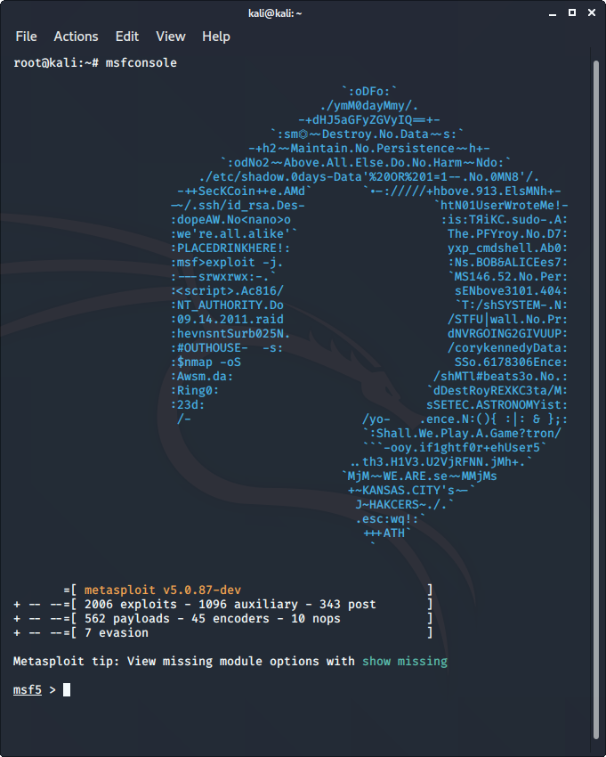

Metasploit est un outil open-source qui a été conçu par les technologies Rapid7. C’est l’un des frameworks de test d’intrusion les plus utilisés au monde. Il est livré avec de nombreux exploits pour exploiter les vulnérabilités sur un réseau ou des systèmes d’exploitation. Metasploit fonctionne généralement sur un réseau local mais nous pouvons utiliser Metasploit pour les hôtes sur Internet en utilisant la « redirection de port ». Fondamentalement, Metasploit est un outil basé sur la CLI, mais il possède même un package d’interface graphique appelé » armitage » qui rend l’utilisation de Metasploit plus pratique et faisable.
